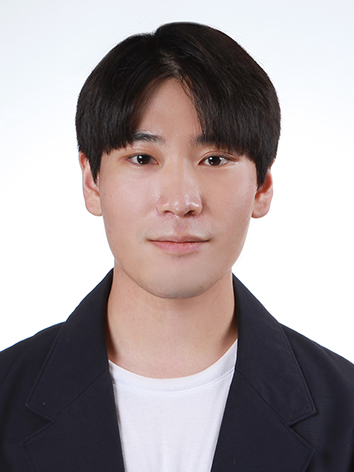

PH.D. STUDENT
Jin Kyum Kim
Research Interests
Immunoinformatics · Autoimmunity · B cell therapeutics
About Me
I am interested in the complex interactions among immune cells, tissues, and organs, particularly in autoimmune disease and cancer. I hope to combine experimental immunology with bioinformatic approaches to investigate B-cell function and explore the therapeutic potential of antibodies.